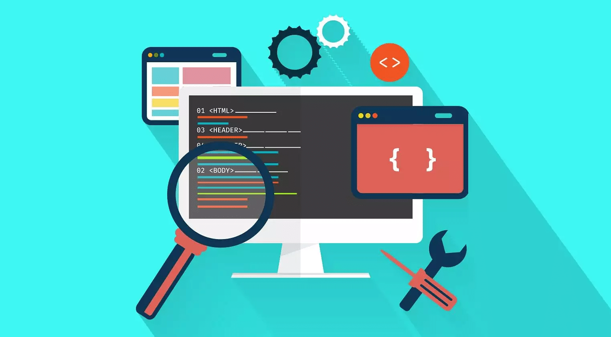
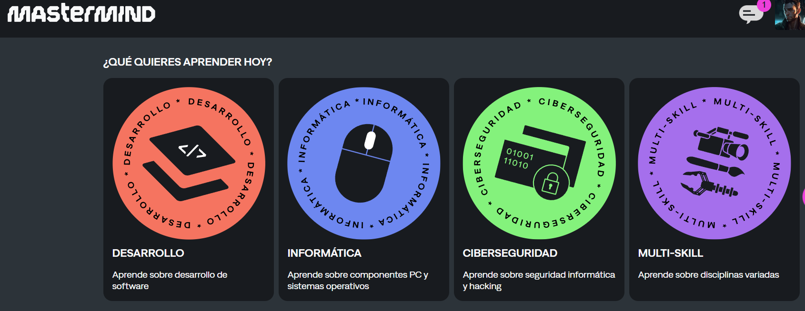

¿Qué es el Front-end?
El Frontend es la parte visual de un sitio web o aplicación, todo lo que los usuarios ven y con lo que interactúan. Incluye diseño, estructura, animaciones, accesibilidad y experiencia de usuario. Es donde la creatividad y la lógica se encuentran.
¿Por qué aprender Frontend?
En la era digital, las interfaces son el puente entre el usuario y la tecnología. Convertirse en Frontend Developer no solo significa dominar lenguajes, sino entender cómo conectar al usuario con una experiencia visual funcional, intuitiva y atractiva.
¿Qué camino debo seguir?
- Dominar los lenguajes fundamentales (HTML, CSS, JavaScript).
- Conocer y aplicar librerías útiles.
- Aprender frameworks modernos.
- Tener nociones de diseño UI/UX.
- Saber usar herramientas de diseño y prototipado.
- Comprender la importancia de cada elemento visual.
¿Donde lo puedo aprender?
MASTERMIND
Mastermind
Es una plataforma con una gran variedad de lineas de aprendizaje, convirtiendose perfecta para aprender la ruta a Front-end